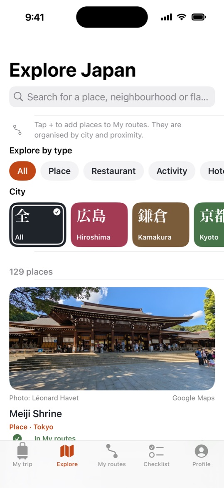
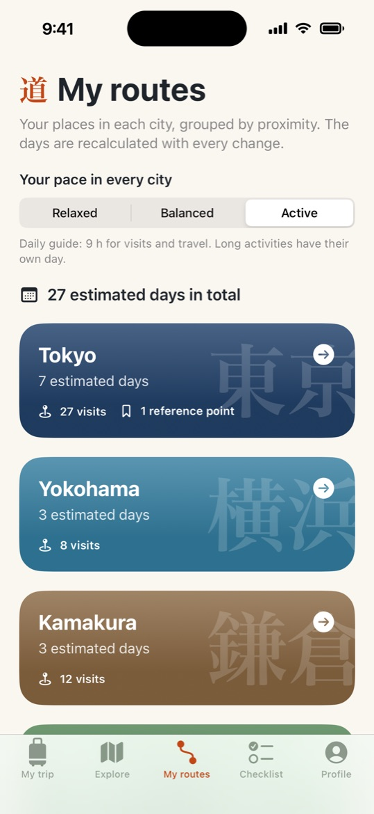
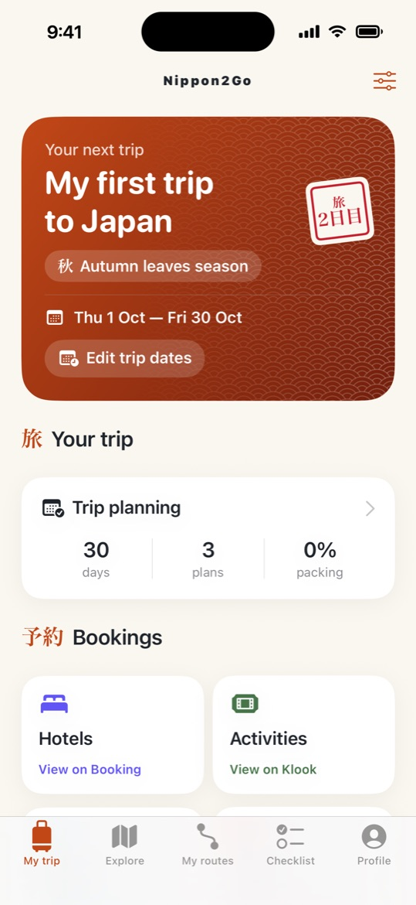
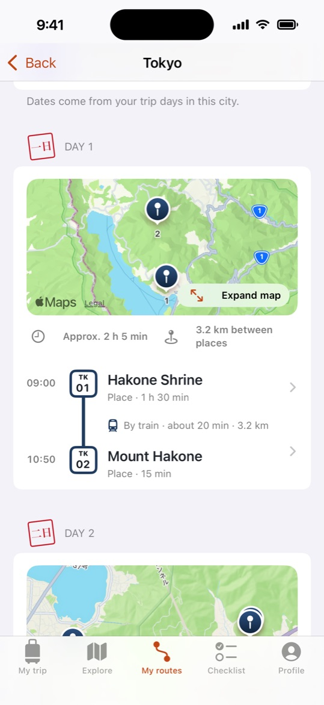
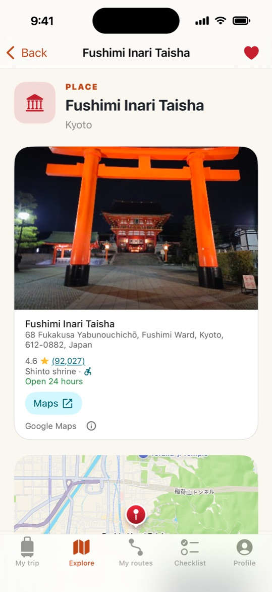
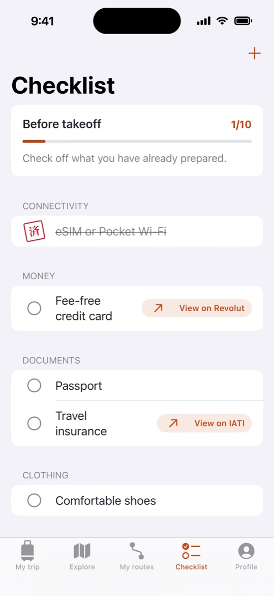
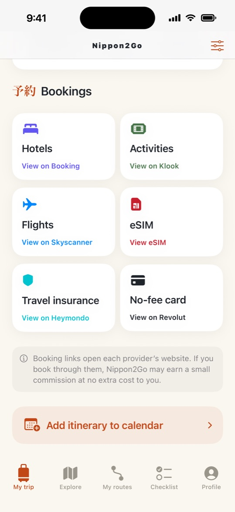

Explore
125+ hand-picked places
Temples, viewpoints, neighbourhoods, restaurants, hotels and experiences in Tokyo, Kyoto, Osaka, Nara, Kamakura, Yokohama and Hiroshima, with photos and filters by type and by city.

Discover the best places, turn them into realistic day-by-day routes and arrive with everything ready, from your passport to your JR Pass.
For iPhone (iOS 17 or later) and Android

From your first idea to your last day in Japan.
Explore
Temples, viewpoints, neighbourhoods, restaurants, hotels and experiences in Tokyo, Kyoto, Osaka, Nara, Kamakura, Yokohama and Hiroshima, with photos and filters by type and by city.

My routes
Add places to your route and Nippon2Go groups nearby stops into days for each city, with times, distances and whether to walk or take the train.

Places
Google rating, opening hours and address, an Apple map and directions with Google Maps. Ticketed attractions link straight to their tickets.

Checklist
Passport, travel insurance, eSIM, plug adapter, JR Pass… plus your own items, stamped with a 済 seal as you tick them off.

Bookings
Hotels on Booking.com with your city and dates filled in, activities, tickets and a Japan eSIM on Klook, flights on Skyscanner, travel insurance from Heymondo and a travel card from Revolut.

An editable agenda for every day, which you can add to your iPhone Calendar in Japan time.
No account required. Your trips stay on your phone. Available in 7 languages.
Quick answers to the most common questions.
No. You can use the whole app without signing in. If you like, you can sign in with Apple or Google in Profile → Account. Your trips are not uploaded anywhere either way.
Only on your phone. Trips are not synced between devices, and deleting the app deletes your trips.
Your trip, routes and checklist are saved on your phone. Maps, place photos, Google place details and booking links need an internet connection.
In Explore, open a place and tap Add to my route. In My routes, Nippon2Go groups your places by city and distance and splits them into days based on your Route pace (Relaxed, Balanced or Active). You can adjust visit times, and then add the route to your schedule. Times and distances are estimates, so check opening hours and transport before you go.
In My trip, tap Add itinerary to calendar, review the events and confirm. Nippon2Go only asks for permission to add events. It cannot read your calendar.
Nippon2Go opens Booking.com with your city and dates already filled in, and links to Klook for activities, tickets and a Japan eSIM, Skyscanner for flights, Heymondo for travel insurance and Revolut for a travel card. Bookings are made directly with those providers, and their terms and privacy policies apply.
Go to Profile → App language. You can choose English, Español, Français, Deutsch, Italiano, 한국어 or 繁體中文, and the change applies instantly.
To sign out, go to Profile → Account → Sign out. This ends your session and keeps your trips. To delete your trips, delete the app from your phone.
Nippon2Go takes travellers from choosing places in Japan to booking them. Provider links already appear exactly where a traveller needs them, ready to become partner links.
Each city in My routes opens Booking.com with that city’s check-in and check-out dates filled in, taken from the trip or estimated from the route. My trip links to hotels for the trip’s first city, with the trip dates.
Ticketed places open their own ticket page on Klook, other activities link to Klook activities in their city, and My trip links to Klook activities too.
The Bookings section and the pre-trip checklist link to flights (Skyscanner), a Japan eSIM (Klook), travel insurance (Heymondo) and a travel card (Revolut). The checklist also links to the JR Pass (Klook).
For iPhone and Android, in English, Spanish, French, German, Italian, Korean and Traditional Chinese.
Interested in partnering with Nippon2Go? Write to carlos@nippon2go.com.
Questions, bugs or ideas for new places? Write to us at carlos@nippon2go.com.